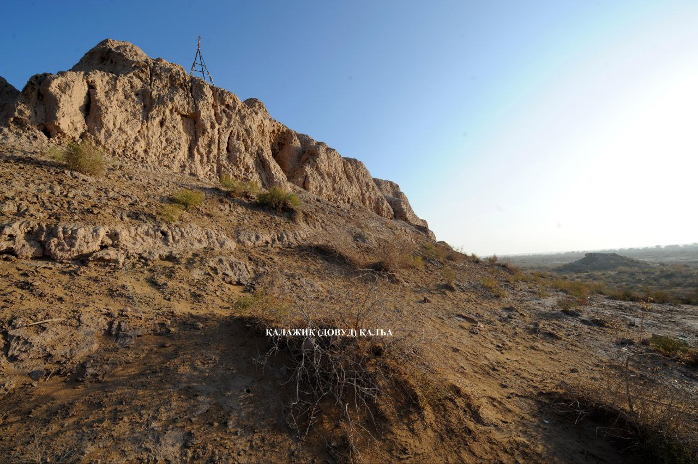
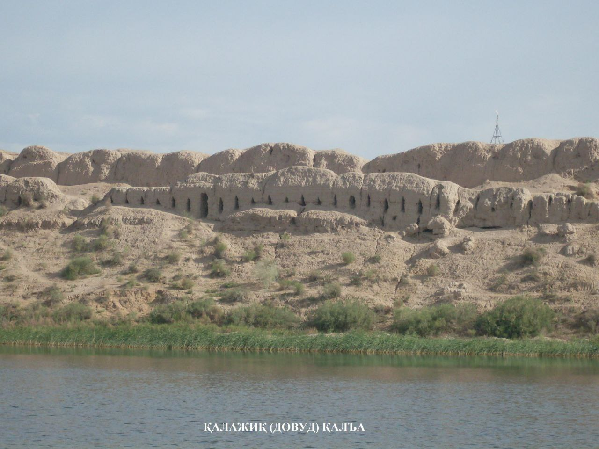

"QALAJIQ QAL’A"
1. Me’moriy inshootning nomi:
"QALAJIQ QAL’A"
2. Me’moriy inshoot tiklangan yil:
Eramizning I-II asrlariga oid
3. Me’moriy inshoot joylashgan manzil:
“Katta Qalajiq” va “Kichik Qalajiq” paxsadevor me’moriy yodgorligi Bog‘ot tumanida joylashgan
4. Me’moriy inshootning qurilish materiallari:
Xom g‘isht, paxsa - guvala, qum, yog‘och
5. Inshootning bosh fasadi h.k.lar:


6. Me’moriy inshootning o‘lchamlari
Yodgorlikning rejasi to‘g‘riburchakli bo‘lib, janubiy devor uzunligi 221 m, shimoldagi devor 184 m, g‘arbda 72 m, sharqda 114 m, tashkil etgan.
7. Me’moriy inshoot to‘g‘risida tarixiy ma’lumot:
Katta Qalajiq” qal’asi “Kichik Qalajiq” qal’asidan 1,5 km janubda joylashgan. “Qalajiq qal’asi” 7-9 m balandlikdagi qum ustiga qurilgan. Eramizning I-II asrlarida qandaydir sabablar bilan tashlab ketilishi natijasida katta Qalajiq qal’asi bo‘shab qolgan. Eramizning VI – VII asrlari Qalajiq va uning atrofidagi yerlar o‘zlashtirila boshlangan. Shu davrga doir shimoliy devorlarning o‘rtasida Ko‘shk – Saroy solingan, uning devorlari paxsadan qilingan. Ko‘shkning o‘lchami 15x20 m bo‘lgan. Ushbu imoratni qurishda xom g‘isht ham ishlatilgan. Bu g‘ishtlar kattaligi 36x38 sm, qalinligi esa 9 – 11 sm ni tashkil etgan. Ko‘shkning g‘arbiy qismida ikkita xonaning o‘rni bo‘lib, biri 6x10 m, ikkinchisi 8x12 m.
Yodgorlikning mudofaa devor (ichki va tashqi) avval paxsadan tiklangan bo‘lib, balandligi 1 m. qalinligi 75-80 sm, ba’zi hollarda 1 m. Paxsadevor ustida to‘rt tamoni teng xomg‘ishtdan devor qurilgan (40 x40x12,44x44x13 sm). Tashqi devorda nayza o‘qi uchli shakldagi shinaklar joylashib, shinaklar o‘rtasidagi masofa turlicha, ya’ni 1,34-1,35 m, ba’zi xollarda 1,05 m. yodgorlikning mil.avv. IV asrga oid ekanligini S.P.T.Tolstov tomonidan ilgari surilgan xronologik davrlar tasdiqlaydi.
8. Me’moriy inshootning texnik holati:
50% devor konstruksiyalari ekologik va texnogen ta’sirlar natijasida yo‘qolib ketgan
BOSH SAHIFAGA QAYTISH